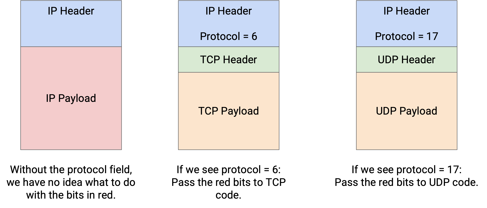
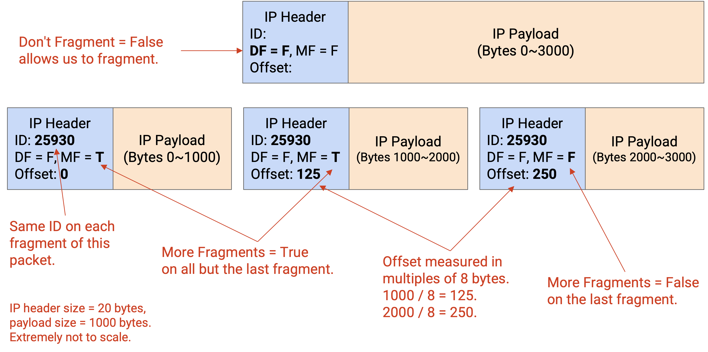
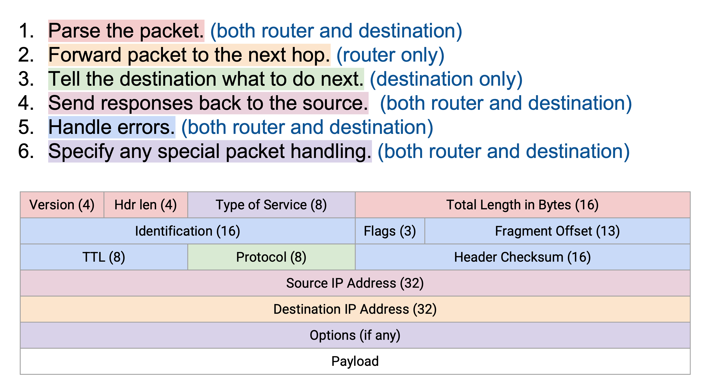
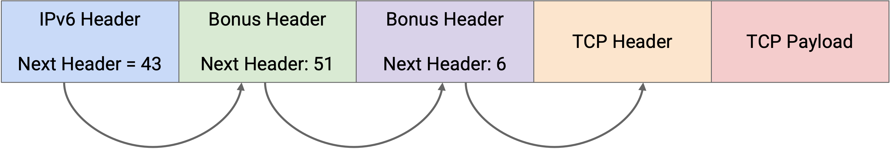
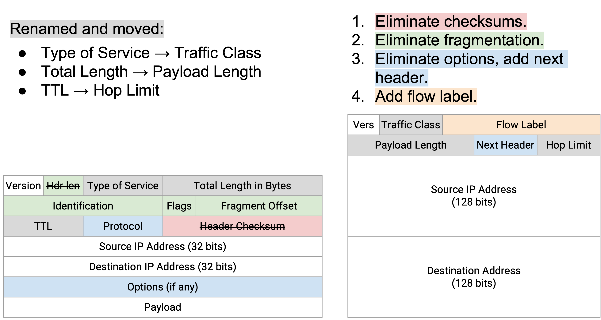
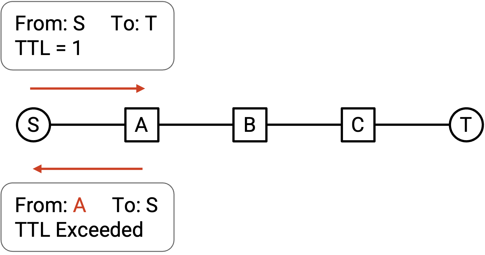
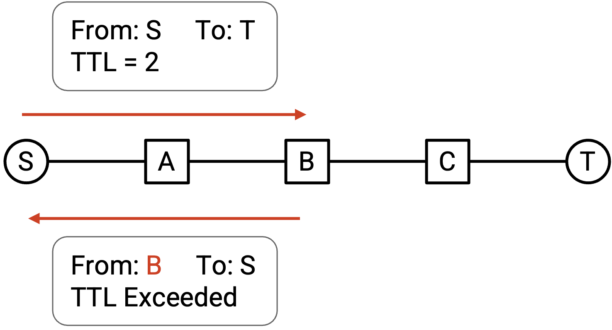
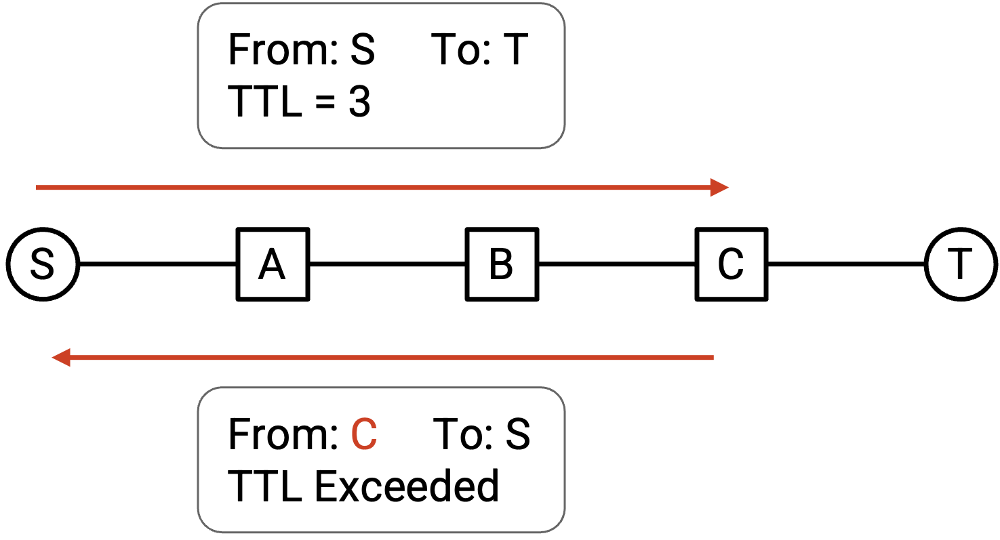
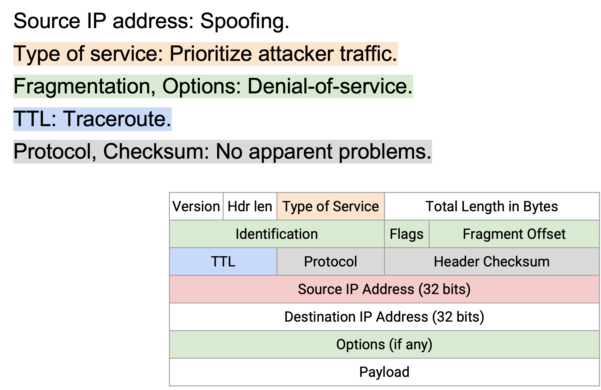

IP Header
IP Header Design Goals
Recall that a protocol like IP consists of syntax and semantics. The syntax determines what fields are in the IP header, and the semantics determine how those fields are processed.
Also, recall that the IP packet consists of a header and payload. The header contains relevant metadata that the IP protocol can process. The payload contains any data that will be passed up to higher-layer protocols, and is not parsed by the IP protocol.
Finally, recall that headers are added as we move down the stack, and stripped away as we pass packets up the stack. IP headers are processed at both end hosts, and at every intermediate router.
The IP header should be as small as possible. Every packet sent across the Internet need the IP header attached, so increasing the IP header size, even by one byte, would significantly increase the total amount of bandwidth across the Internet.
The IP header should be as simple as possible. Every router and end host has to process IP packets as they’re sent and received, so a header that’s complicated to process would slow the entire Internet down. Ideally, we’d like the header to be processed purely in hardware, so we can’t assume we have access to general-purpose CPU operations when processing this header.
IP Header Fields
An IP protocol needs to do four things:
Everybody (end hosts, routers) need to be able to parse the packet and understand what the bits mean. To support this, the header will include the IP version (4-bit value), the header length (4-bit value, measured in 4-byte words, required because the IP header length is not fixed), and the packet length (16-bit value, measured in bytes).
Routers (not end hosts) need to forward the packet to the next router. To support this, the header will include the destination IP address (32-bit value).
End hosts (not routers) need to pass the packet up to higher layers. To support this, the header will include a protocol number (8-bit value), which tells us which Layer 4 protocol (TCP or UDP) should be used to process the payload. For example, a protocol number of 6 says to use the TCP protocol to read the remaining payload (reading the first bits of the payload as the TCP header, and so on). A protocol number of 17 corresponds to the UDP protocol.

End hosts and routers need to be able to send replies back to the source. To support this, the header will include the source IP address (32-bit value).
IP Error Handling
End hosts and routers also need to be able to specify problems or special cases in case a packet needs additional handling.
IP packets can be stuck in loops (e.g. if the routing protocol hasn’t converged yet). One possible option is to let the packet loop indefinitely until routes converge, but packet forwarding happens on nanosecond scale, and routing convergence happens on the millisecond or second scale. Letting the packet loop until routes converge can take a long time and waste a lot of bandwidth. To prevent indefinite looping, the IP header has a time to live (TTL) (8-bit value), which is decremented at each hop. If the TTL reaches 0, the packet is discarded, and an error message is sent back to the source. (The error message is required by the IP specification, though is not always sent in practice.)
IP packets can be corrupted (e.g. bits on the wire can be corrupted from electrical processes). To detect corruption, the IP header contains a checksum (16-bit value), and discards packets if the checksum is incorrect.
Note that the IP checksum is only computed over the IP header. The checksum can only detect errors in the IP header, not errors in the IP payload. This reflects the end-to-end principle, where we enforce that the payload is checked by the end host, not the intermediate routers.
The IP checksum is updated at every router, because the TTL changes, and the checksum has to be re-computed. One possible alternative design is to exclude the TTL in the checksum, to save routers the extra work.
IP packets could be too large for a specific link. Each link has a maximum transmission unit (MTU), indicating the largest packet size (in bytes) that link can carry as one unit. For example, the link might have limited memory for remembering a packet while it sends the bits along the wire.
The end host doesn’t know which links will be carrying the packet, so the end host might sent a packet that’s too large for one of the links. To solve this, a router can perform fragmentation, splitting the packet into multiple fragments, which the router on the other end of the link must reassemble to recover the original packet. The identification (16-bit), flags (3-bit), and offset (13-bit) fields in the header are used to implement fragmentation.

Fragmentation is achievable in hardware (e.g. a router can quickly fragment packets without punting the packet for special handling), but it introduces extra overhead. The modern Internet avoids fragmentation whenever possible. For example, we try to standardize the MTU as much as possible (a modern standard is 1500 bytes).
The early designers of IP did not fully embrace best-effort design, and thought it might be useful to allow applications to send packets of different types based on the application’s needs. To implement this, the IP header has Type of Service (ToS) bits (8-bit value), which can be used to request different forms of packet delivery. For example, some packets can be marked as delay-sensitive or high-priority. Over the years, these bits have been redefined to represent different protocols, and ToS no longer exists in its original form. Instead, these bits now represent some notion of priority. Examples of protocols using these bits are Differentiated Services Code Point (DSCP), which defines certain classes of traffic, and Explicit Congestion Notification (ECN), which will help with traffic congestion (discussed later).
In the original IP design, additional option bits can be added to the IP header to request more advanced processing on the packet. For example, the sender can request routers to record the route that the packet is taking (e.g. for diagnostics). The sender could include a source route in the packet header and force the packet to travel a certain route. The packet header could also include a timestamp. In modern implementations, these options are almost always disabled, because they lead to unnecessarily complicated implementations that increase the packet processing overhead. For example, these options force the IP header to be variable-length, which is harder to process than a fixed-length header.

IPv6 Header Changes
IPv6 was motivated by the concern that we would eventually run out of 32-bit IPv4 addresses. IPv6 expanded addresses so that addresses are 128 bits long. The number of possible IPv6 addresses is astronomically large (think: number of atoms in the universe), so we will almost certainly never run out of IPv6 addresses.
The designers of IPv6 took the opportunity to clean up and modernize the IP header, removing and updating fields that are outdated. Originally, IPv6 was intended to be a more ambitious protocol with many new addressing features, but most of these features were never realized. In practice, besides this “spring cleaning” removal of outdated features, there weren’t many significant changes to the protocol from IPv4, so the result is a more elegant IP protocol, without many ambitious changes.
Note: In case you’re curious, IPv5 was published in 1990 (before IPv6 in 1998). It was an experimental protocol that was never widely implemented.
IPv6 eliminates checksums in the IP packet header. The argument in favor of including a checksum is: if a packet is corrupted and is not detected, the corrupt packet continues being sent, wasting bandwidth. Including the checksum ensures that the packet is dropped and bandwidth is not wasted on a corrupt packet. In modern times, bandwidth is less of a bottleneck, so the checksum is no longer necessary, and it’s not a huge performance impact if some corrupt packets are sent all the way through the network.
IPv6 eliminates fragmentation. If an IPv6 packet is too large for a specific link, the router will drop the packet and send an error message back to the source with the maximum allowable packet size (MTU). The original sender is responsible for splitting up the data into smaller packets and re-sending those smaller packets. End hosts (e.g. your personal computer) process fewer packets than routers (e.g. in data centers), so transferring the workload of fragmentation from routers to end hosts improves the overall scalability of the Internet.
IPv6 replaces the variable-length options section with a modified implementation of the protocol field. In IPv4, options were problematic because they created variable-length headers, which are harder to parse. In IPv6, the header is fixed in length. This also means that the header length field can be eliminated.
In order to continue supporting options, IPv6 generalizes the protocol field to allow the IP packet to be passed up for special processing before reaching Layer 4. (Recall, the protocol header in IPv4 is set to either 7 or 19, to indicate which Layer 4 protocol processes the packet next.) The field is renamed from protocol to next header in IPv6.

If you want an additional protocol to process the IP packet, you can put that protocol’s corresponding number in the next header field. The designers and users of these extra protocols need to agree on which numbers correspond to which protocols, and a standards body organization needs to manage these numbers. Then, the payload can be passed to the additional protocol, which can read an additional header (after the Layer 3 IPv6 header, but before the Layer 4 header) and perform additional processing, before passing the remaining payload to Layer 4.
If the packet has no additional options, then the next header field is the same as the old protocol field, allowing the IP packet to be directly passed up to a Layer 4 protocol with no further processing.
The idea of next headers can be generalized to allow multiple protocols to process the packet after IPv6, but before Layer 4. For example, IPv6 could have a next header for special processing. Then, the special processing protocol’s header can also contain a next header field, which either specifies a Layer 4 protocol, or yet another special processing protocol. This approach is future-proof, because it supports future protocols that haven’t been invented yet. Those future protocols can be added in this next-header approach, without breaking IPv6 or requiring an update to IPv6.
IPv6 adds a flow label field to the header. At layer 3, packets are sent independently (how one packet is sent doesn’t affect other packets), but in practice, it’s common for many packets to be related in some way. For example, in a video stream between two hosts, there can be many packets being sent between the same two applications. Layer 3 is supposed to treat these packets separately, but in practice, routers have added more advanced systems called middleboxes (e.g. firewalls, intrusion detection systems) that might care about the fact that these packets are part of the same flow, or connection. For example, a firewall might need to read multiple packets from a connection to decide whether that connection should be allowed or blocked. When all packets are sent independently, these middleboxes have to guess whether two packets are related or not (e.g. it notices packets with the same source/destination IP address). IPv6 adds an explicit way to denote that multiple packets are related.

The version number is unchanged between IPv4 and IPv6. The packet length is unchanged (though renamed from Total Length to Payload Length). TTL is renamed to Hop Limit, though the functionality is unchanged.
The Type of Service bits are renamed to Traffic Class, and can still be used to implement some notion of packet priority.
In general, IPv6 embraces the end-to-end principle and asks the end host to do the work (fragmentation, verifying checksum and re-sending corrupt packets) when possible. Some fields, like the hop limit or TTL, are fundamentally an IP-level problem, and can’t be implemented by end hosts. (How would the end host help with a packet looping through the network?)
IPv6 also tries to simplify the header (removing variable-length options), while still allowing extensibility for future improvements (next-header approach, flow label).
IP Header Security
IP does not have any built-in security against attackers. An attacker could send a packet with an incorrect source IP address, allowing the attacker to impersonate somebody else. This might cause the impersonated host to be wrongly blamed for a packet. Or, if the attacker sends a spoofed packet, the reply may be sent to the impersonated host. Lying about the source address is known as IP spoofing.
IP spoofing can be used for denial-of-service (DoS) attacks. A DoS attack can be used to overwhelm a server and cause it to crash by flooding the server with packets. If all the packets came from the same sender, the server could stop the attack by ignoring packets from the attacker’s IP address. However, if the attacker lies about the source IP address, the server has a harder time distinguishing attacker traffic from legitimate traffic.
More sophisticated attacks involving spoofing exist, though we won’t cover them in detail in this class (see the UC Berkeley CS 161 notes for more details).
The ToS field in the IP header allows the sender to set a priority on their packets. If we allow everybody to set their own priority, malicious users can set higher priorities and trick the network into prioritizing attacker traffic.
If the network charges an extra fee for high-priority traffic, the attacker could send a spoofed high-priority packet, and the impersonated host would have to pay for the attacker’s traffic.
The original Internet design did not stop these attacks, though modern ISPs (Internet service providers) have implemented additional security measures to mitigate IP layer attacks. In the modern Internet, ISPs don’t allow end hosts to set the ToS field, and many ISPs have tools to detect and block spoofed packets.
In IPv4, attackers could intentionally send large packets, forcing routers to perform extra work fragmenting those packets. Or, attackers could intentionally add extra options, forcing routers to process those extra options. This could be used to perform DoS attacks and overwhelm a router’s processing capacity.
The TTL field can be exploited to learn about the network topology. You could send a packet with TTL 1. The packet will expire at the first hop, and the first router will send you an error message, allowing you to learn the identity of the first router.

Then, you can send a packet with TTL 2, which will expire at the second hop. The second router will send you an error message, allowing you to also discover the second router.

By repeating this with TTL 3, TTL 4, and so on, you can discover all the routers on your path. This attack is known as traceroute, though others argue that it’s not an attack and is useful for diagnostics.

Repeating this attack on different sources and destinations allows you to learn more of the network topology. Some routers do not send an error message when the TTL is exceeded, which might limit this exploit.
An attacker could theoretically tamper with the protocol or checksum field, but this would likely cause the packet to be dropped because of an invalid protocol or checksum, so practical attacks with these two fields don’t really exist.
